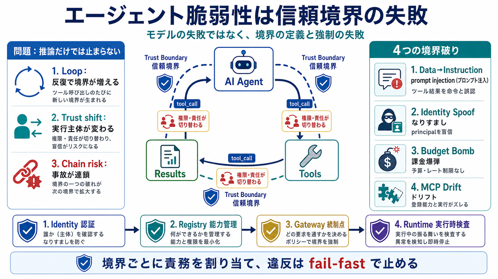

MCP vs A2A: The AI Agent Protocol War That Decides the Next Internet
# The AI Agent Protocol Wars: MCP, A2A, and the Standards Battle That Will Define the Future of Agentic AI. On February …

エージェントの脆弱性は「モデルの失敗」ではなく、trust boundary（信頼境界）の不在・不適切な定義と強制の失敗として整理できる。
単発の推論（inference）ならガードレールで抑えやすいが、エージェントは tool_call を実行するため「実行ごとに権限と責任が切り替わる」。
trust boundary とは、異なる権限・責任を持つコンポーネント間で「承認に基づき、目的別に、適切な形で渡される」ことを区切る線。
対策は一つではなく多層（identity + registry + gateway quotas + runtime guardrails）で境界を執行し、違反は fail-fast で止める必要がある。
代表的な失敗は「境界が誰によって破られたか」で整理できる。以下は具体例。
prompt injection は「ツール結果＝データ」か「命令」かの区別不全として現れる。ツールが返す内容に指示が埋め込まれると、LLMが従える形になる。
A2A やマルチホップでは「principal が連鎖して検証されるか」が核心。下流がユーザー主張を署名検証せず受け入れると confused deputy が起きる。
予算やレート制限がなく、無制限ループや課金爆弾が発生する。LLMが“止まらない”こと自体が、境界の失敗になる。
MCP drift は MCP サーバのツール説明（description）やツール一覧が署名なしで変化し、エージェントがそれを“指示”として採用してしまう現象。
提案の骨格は「identity + registry + gateway + runtime」を分業させ、各境界で fail-fast を起こすこと。
モデルの改善は役立つが、エージェントは外部実行と反復のため、ガードレールが届かない経路（tool result、principal、capability、cost）で壊れる。
導入判断では、仕組みの“運用・検知精度・保証レベル”が要件に合うかを別途評価する必要がある。
# The AI Agent Protocol Wars: MCP, A2A, and the Standards Battle That Will Define the Future of Agentic AI. On February …
Ahead of the conference, David Brauchler, Technical Director and Head of AI/ML Security at NCC Group, put the core probl…
| Internet-Draft | Agent Security Requirements | February 2026 |. : draft-ni-a2a-ai-agent-security-requirements-01. # …
# Deep Dive MCP and A2A Attack Vectors for AI Agents. Explore critical security vulnerabilities in AI agent ecosystems, …
If your organisation is deploying AI agents or has Claude Code, OpenClaw, or MCP servers in any environment, these five …